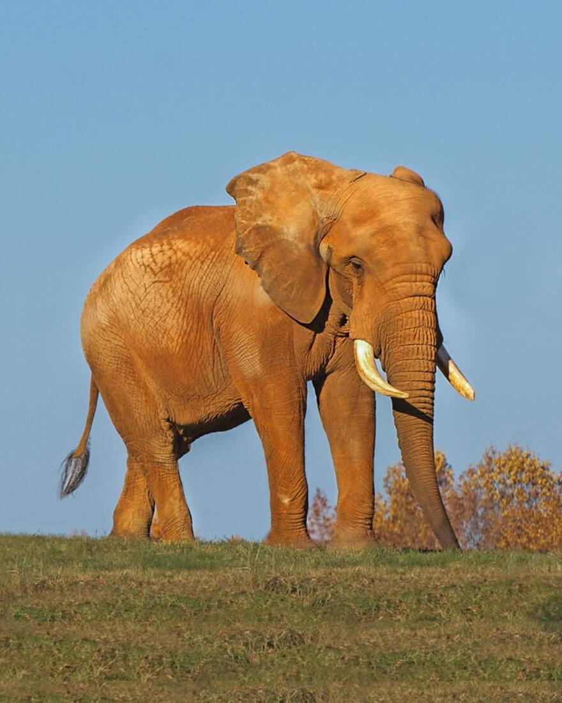

Hello, as you can see my name is Mary
I dont think I have a favorite artist. I think choosing just one would be impossible
But if I had to, it would be Laufey. I think she has a beautiful voice.
Additionally, since I'm a very anxious person, her music helps me unwind and relax.
One of my favorite lyrics from her is...
Let me be a dreamer, let me float, I can see the whole world from my own cloud
An ethical value that is most important is compassion and empathy. I think it's important for everyone to understand that no matter
the background, color, or difference, we all have, it's important to treat people with respect and kindness.
No matter what, we are all human beings.
I enjoy watching movies. All types: comedy, action, romance. All types, even if it's not in English
The last movie I watched was called the Intouchable. It's a comedey/ drama French movie. It made me laugh and also cry all at the same time.
I would recommend anyone and everyone to watch.
One thing you should know about me is that I really love animals. My favorite animal is elephants.
